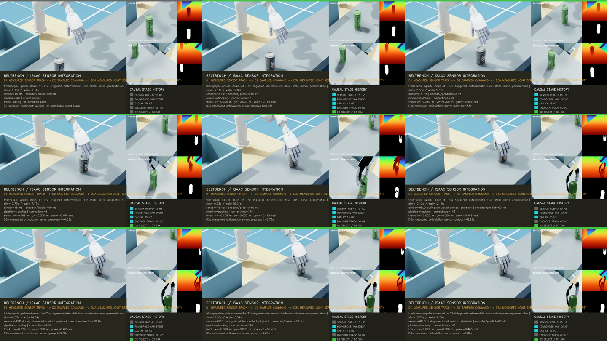

pregrasp부터 first contact까지 비침투 상태를 분리하고 실제 sensor·selection·servo 시간축에서 검증한다.
pregrasp → close_above_object를 접촉 허용 구간으로 취급하던 모호성을 제거했다. 양의 stand-off를 유지하는 guarded_proximity와 first contact로 수렴하는 nonpenetrating_approach를 별도 상태로 만들고, C2 actual-time command·HPP-FCL·Isaac RGB-D·FoundPose·track selection·PhysX articulation servo를 RTX 3090의 19초 실행에 연결했다. 최종 r72는 285/285 frame과 실제 시간 gate를 통과했다.
execution_authorized=false이며 continuous swept collision, contact force, object dynamics, physical attachment, release 성공과 hardware controller 권한은 없다. 영상의 grasp와 drop은 검증된 command reference를 보여주는 diagnostic이다.1280×720 · 15 fps · 285 frame · 19.000초 · SHA-256 154ea788446dc55549917697f58566dd727db6722e9501061058906a4518a353

왜 네 상태가 필요한가
| 상태 | 시간 경계 | 검증 규칙 |
|---|---|---|
clearance | pregrasp 이전 | 일반 robot-object clearance와 workcell collision을 검사한다. |
guarded_proximity | pregrasp부터 정확한 close_above_object keyframe까지 | 요구 거리 0.1 mm보다 큰 양의 stand-off, contact geometry 0, colliding pair 0을 강제한다. |
nonpenetrating_approach | close_above_object 직후부터 first contact 직전까지 | 고정 경계 0 m로 first contact에 연속 수렴하되 음의 signed distance와 조기 contact를 거부한다. |
bounded_contact | 선언된 first contact 이후 | 명시한 hand-object contact geometry만 허용한다. |
first contact까지 양의 고정 여유를 요구하면서 정확한 접촉점에 연속 도달하는 것은 수학적으로 양립하지 않는다. 임계값을 느슨하게 하거나 마지막 sample만 예외 처리하지 않고, 의미가 다른 stand-off와 contact approach를 상태와 phase 수준에서 분리했다. Hand는 close_above_object까지 pregrasp command를 유지하고 그 이후에만 닫히기 시작한다.
r71 계획·충돌 결과
| 항목 | 결과 | 해석 |
|---|---|---|
| C2 command | 201 waypoint, 9.0초, contact 8.7초, attach 9.0초 | 정지 시작에서 moving source로 2.4초 quintic splice하며 position·velocity·acceleration 경계를 유지한다. |
| Kinematic limits | 통과; arm 최대 jerk는 joint 5의 6.419 rad/s³ | Arm jerk limit 10 rad/s³를 완화하지 않았다. |
| Full playback | 271/271 HPP-FCL frame valid | Exact mesh sampled 검증이다. Sample 사이 continuous swept authority는 아니다. |
| Guarded proximity | 115 frame, 최소 거리 4.151195 mm, 요구 0.1 mm | pregrasp와 close_above_object에서 접촉·침투가 없다. |
| Contact approach | 44 frame, 최소 signed distance 0.019071 mm, collision/contact 0 | First contact 직전의 작은 양수다. Hardware uncertainty에 대한 robust clearance로 해석하지 않는다. |
Guarded audit와 271-frame HPP-FCL report의 SHA-256은 각각 05bf689781158e4a1d8cf97eaf59a6caa5e1947a3e232f70ab95e26141d79ad3, 604f5fb8ab91907e8fde1d78316c58251f4cc369307590468dd9eb36a8dd5f13다. 원본은 계정과 내부 절대 경로를 포함하므로 public site에는 복사하지 않았다.
실패와 해결 연대기
| 관찰 | 원인 | 수정과 결과 |
|---|---|---|
r52 compile에서 arm joint 4/6 jerk가 445.23/434.98 rad/s³였다. | 접촉 직전 finite-speed profile x²(2-x)가 splice 이후 C2 derivative를 악화시켰다. | 10x³-15x⁴+6x⁵ minimum-jerk profile로 교체했다. 최종 joint 4/6 jerk는 4.158/3.980 rad/s³다. |
guarded_proximity만으로 close와 contact를 함께 표현할 수 없었다. | 양의 고정 clearance와 연속적인 exact first contact가 모순이었다. | guarded_contact_approach phase와 nonpenetrating_approach 상태를 추가하고 고정 0 m penetration boundary를 적용했다. |
r54가 새 phase를 해석하지 못했고 shell pipeline은 producer 실패를 숨겼다. | Canonical phase map 누락과 producer | tee의 마지막 exit code 사용이 겹쳤다. | 새 phase를 close semantic에 명시적으로 매핑하고, unguarded pipe 실행을 금지했다. |
r57은 고정 playback time, r58/r61은 이동된 artifact의 상대 asset 경로에서 실패했다. | Splice가 source의 실제 moving boundary 대신 상수를 사용했고 출력 위치를 바꾸면 robot/object manifest 기준이 깨졌다. | 유일한 source phase·arm·hand moving boundary에서 시간을 유도하고, output 기준으로 asset path를 rebase한 뒤 runtime reproduction에서도 그 경로를 보존했다. |
r63/r66 servo feedback read가 3.194/12.767 ms로 2 ms gate를 넘었다. | Arm과 hand joint group마다 PhysX state를 반복 조회했다. | 한 번의 get_joint_positions snapshot에서 arm과 12 hand joint를 분리했다. r72 max feedback read는 0.240 ms다. |
r60/r67 FoundPose yaw가 각각 0.08072/0.14363 rad로 gate를 넘거나 pass 사이 달라졌다. | Solver RNG가 실행마다 달랐다. | Camera별 stable seed로 Python·NumPy·Torch/CUDA·OpenCV RNG를 매 solve 직전에 초기화했다. 같은 capture bundle 3회 재생에서 pose, template와 inlier가 bit-identical했다. |
r70 authority/presentation acquisition이 1.6000/1.5667 s에서 발생해 yaw가 달라졌다. | 첫 mask-area 통과가 영상 부하와 render schedule에 종속됐다. | Mask는 validity check로 유지하고, 별도 upstream trigger plane belt x=-0.44 m 이후에만 acquisition event를 연다. Truth pose를 perception 입력으로 사용하지 않는다. |
r72 실제 시간 결과
| 항목 | Authority | Presentation |
|---|---|---|
| Trigger / acquisition | simulation timestamp 3.066667 s, generation 259, 0.729초 | 같은 timestamp, generation 274, 0.764초 |
| Pose error | 위치 2.300 mm, yaw 0.01505 rad | 위치 5.412 mm, yaw 0.00238 rad |
| Sensor / CAD | CAD correction 183회, failure 0 | 167/167 ingress 처리, sync drop 0, deadline miss 0, CAD correction 143회 |
| Selection | 영상 부하 없이 D1 authority만 측정 | 8번째 query에서 exact track 선택; query p95 0.079 ms |
| Servo | 실행하지 않음 | 1,140 sample; arm 0.01986 rad, hand 0.02271 rad, command 0.411 ms, feedback 0.240 ms |
| Real time | control RTF 0.999995 | control RTF 0.999541, wall lateness p95/max 77.92/137.29 ms |
| Video | 생성하지 않음 | presentation RTF 0.974836, 285/285 encoded, drop/error 0 |
Trigger의 simulation timestamp는 고정됐지만 sensor generation 번호와 최종 yaw가 완전히 같지는 않다. Authority/presentation yaw 차이는 0.01743 rad이며 둘 다 동일한 0.08 rad command gate를 통과했다. 따라서 현재 결과는 deterministic solver와 spatially fixed event를 입증하지만 전체 sensor rendering의 bit-identical replay를 의미하지 않는다.
FoundPose v9 qualification, authority report와 presentation report의 file SHA-256은 각각 8e3a37d1e592d070ce475e5565b6b9f0dc494ce08860d57aee7fc55433745f77, 3e5e8b7b75ca08a5ea516d632f941ce0af27ba55a74341da5828ba0bcd6440ea, ad33ddefe3b343ad7bd6f078de9b7bf0fdb6ae34228e163aee22d4ac8fef4a28다. Source-closed 원본 evidence는 RTX run archive에 보존했다.
Qualification, 테스트와 source closure
Seed 20260824를 고정한 v9 full-yaw qualification은 12/12 sample을 accepted했고 최대 yaw/position error는 0.10180 rad/0.333 mm였다. 최종 revision 995a349d9d1b93a2365a56f8ed2cada7c2f0839c의 전체 회귀는 1,105 passed, 15 skipped다. r72 presentation canonical report digest는 ec42ab4801a9a60a0475d87351fdf94ee29cfaf8126f0c1b5148eae6f89e370f이고 파일 SHA-256은 ad33ddefe3b343ad7bd6f078de9b7bf0fdb6ae34228e163aee22d4ac8fef4a28다.
구현은 6ecf8ec positive-clearance gate, 6cce5d1 four-state split, 2db9640 phase mapping, f9a38a8 moving-boundary splice, 4b794c4와 720e3ea artifact relocation closure, b663ba3 single feedback snapshot, ac919f8 deterministic FoundPose, 995a349 spatial trigger plane으로 단계별 push했다. 설계 원칙과 실패 재발 방지는 각 commit에서 AGENTS.md와 방법론 문서에 함께 기록했다.
남은 blocker
0.019071 mm는 sampled nominal path의 작은 양수일 뿐 calibration·latency·mesh·controller uncertainty를 흡수하는 robust margin이 아니다. Hardware 접근 속도와 stop distance를 포함한 guarded controller가 필요하다.- 271/271 HPP-FCL 결과 사이 구간에 대한 continuous collision authority는 없다. Runtime에는 qualified cuRobo moving-object collision gate를 연결하고 exact-mesh holdout에서 false negative 0과 deadline을 다시 입증해야 한다.
- FoundPose full-yaw qualification의 최대 오차
0.1018 rad는 현재 command yaw gate보다 크다. No-pick 정책, multi-frame/multi-view likelihood와 독립 holdout을 포함한 개선이 필요하다. - Isaac 영상은 contact force·slip·object free dynamics·attachment 성공을 측정하지 않는다. D3b에서 measured contact와 release/bin containment를 연결하기 전에는 grasp 성공률을 보고하지 않는다.
- Isaac provisional servo gain과 connector CAD 정렬을 실제 xArm/Inspire에 그대로 이전하지 않는다. 실제 controller clock, protective stop, connector seating과 calibration uncertainty를 별도 qualification한다.
ISSUE-082 articulation servo · ISSUE-079 guarded source closure · ISSUE-040 cuRobo audit